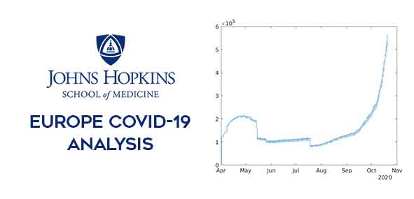
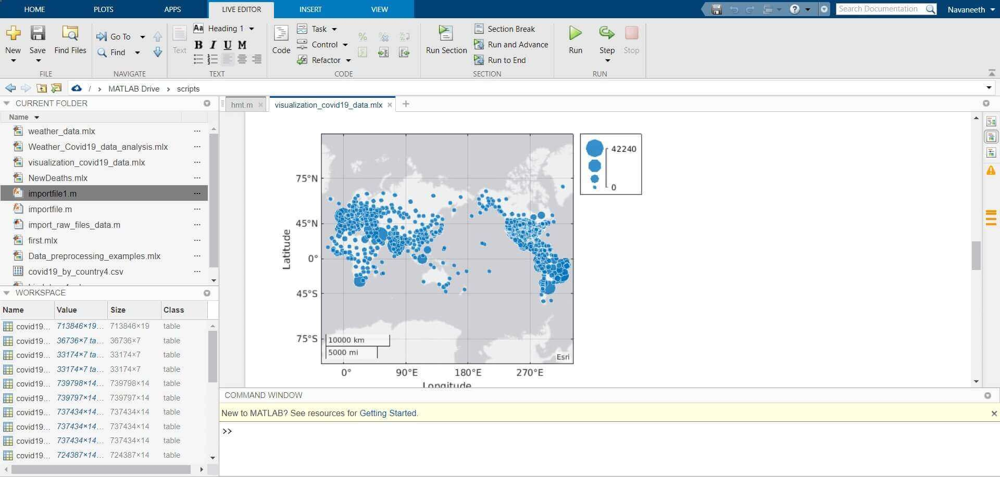
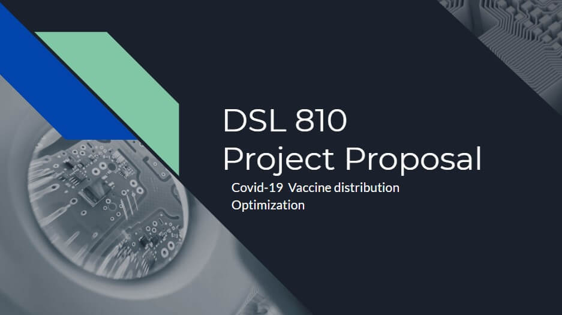
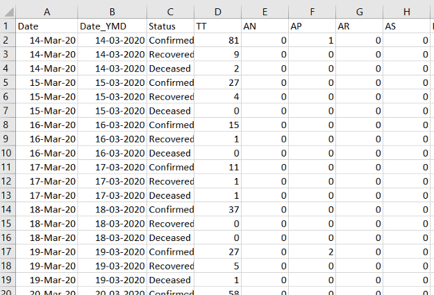
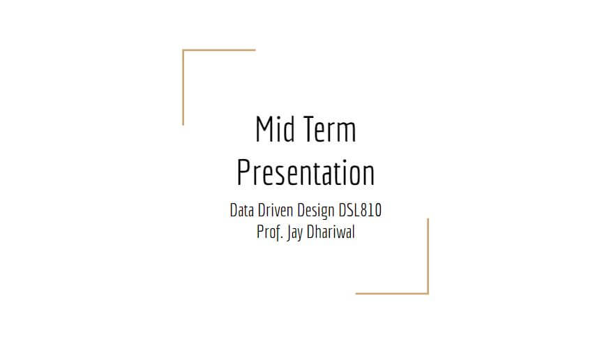
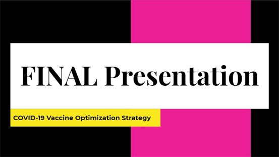

Having taken already registered for 24 credits, I knew that taking up DSL810 would make sure I was busy throughout the semester. However, the course content was too good to let go of. This, combined with the enormous amount of praises for Prof. Jay from Saksham and Ayush, made sure I stuck to it even after being de-registered.
The first few weeks flew by with discussions on previous projects and brainstorming sessions for choosing our projects. My project team consists of Ayesha, Aryan and Gauransh.
The first task for the course was to develop a website which would store all the work done throughout the course. I had been working on my website for quite some time now, creating elements from scratch. However, since the deadline was set, I had to pick up the pace and hence took elements from templates.
The video added above shows the animation I developed from scratch which I am currently working making it compatible for this template. It will soon be incorporated to the first page.
Problem statement: Can you validate this with the covid-19 datasets that you have or downloading fresh data from CSSE git repository? Please show the analysis using a time series plot (no. of deaths vs. day from 1st April till now). Please also find out if this is the case in your State as well. Show the visuals and the insights. Please also upload your live script(s) properly commented with the assignment.
The dataset from John Hopkins University provied during the class is used in this visualization assignment. The data for European countries have been isolated from the entire dataset and the descripencies such as absence of last updated data were rectified. The final processed data was used to calculate the variation of active covid-19 cases for Europe and this was plotted against time. The live script and related functions used has been uploaded on my Github profile.(Assignment 1)


Data Processing and Visualization related activities were carried out using Covid-19 data from John Hopkins University. These activities involved using matlab scripts to clean out the raw data set, removing reduntant data points and identifying useful data. These data were also visually represented using means such as bargraph & geobubble
The model exists already and there’s nothing innovative in that, but what we have figured out is in a country with such a huge population different states have different geographies, demographics and Reproduction Number(R). In such a case the question arises how to decide which state will get more vaccines?
 Click this image for complete presentation.
After weeks of websurfing and countless brainstorming sessions, our team finally decided to tackle the problem of Supply Chain optimization for Covid-19 vaccines. Through this, we aim to develop a software that would be able to predict the best distribution of the limited number of vaccines to the different states so as to ensure minimum number of cases in the future. This will be achieved by utilizing a prediction software for the Covid-19 cases and understanding the impacts on this model on vaccinating a certain number of citizens in the region.
Finding a dataset for COVID-19 is not that challenging but overcoming the anomalies in data is a problem. Sometimes cases are intentionally under-reported. There is some problem in data entry at the ground level. For the case of India, the dataset used is by an organization covid19India.org. The raw data was aquired in the following format.

 Click this image for complete presentation.
Since the project was part of a course, we had to complete a prototype by the end of the semester. Thus, we developed a beta-version of the program on matlab which gave the required results but was too slow. Hence, temporarily we ran the predictions with just 4 states. We reciebed results which were in accordance with our assumptions.

Click this image for complete presentation.
We would like to improve this further and also incorporate all the states. Also, for faster execution, we plan to shift the code to python. This stage of development will be carried out in the summer of 2021.